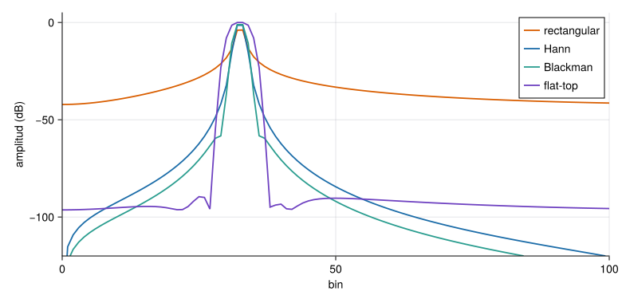

La DFT supone que el registro es un periodo de una señal periódica. Si contiene un número entero de ciclos de una sinusoide, ese supuesto se cumple y el espectro tiene una sola línea. Si no (lo normal), el «salto» entre el final y el principio es una discontinuidad, y la energía se fuga hacia los bins vecinos, con lóbulos laterales que decaen lentamente.
Se reduce multiplicando el registro por una ventana\(w[n]\) que baja suavemente a cero en los extremos. El precio es un lóbulo principal más ancho (menos resolución). Tres números las caracterizan:
Ganancia coherente\(\sum w/N\): factor por el que una ventana reduce la amplitud de una sinusoide (hay que dividir por él para recuperarla).
Ancho de banda equivalente de ruido (ENBW) \(N\sum w^2/(\sum w)^2\), en bins: cuánto ensancha el ruido blanco.
Pérdida por escalonamiento (scalloping): cuánto se subestima la amplitud de una sinusoide que cae entre dos bins.
Ver el código
N =256functionamp_est(nombre, f_bins) w =ventana(nombre, N) x =cos.(2π * f_bins .* (0:N-1) ./ N) X =fft_radix2(x .* w)returnmaximum(abs.(X[1:N÷2])) *2/sum(w)endnombres = [(:rectangular, "rectangular"), (:hann, "Hann"), (:hamming, "Hamming"), (:blackman, "Blackman"), (:flattop, "flat-top")]filas = ["| $n | $(coma(ganancia_coherente(ventana(s, N)); d=3)) | $(coma(ancho_banda_ruido(ventana(s, N)); d=2)) | $(coma(amp_est(s, 32.0); d=3)) | $(coma(amp_est(s, 32.5); d=3)) |" for (s, n) in nombres]Markdown.parse("| Ventana | Ganancia coherente | ENBW (bins) | Amplitud en el bin | Amplitud entre bins |\n|:--|--:|--:|--:|--:|\n"*join(filas, "\n"))
Tabla 1: Ventanas de uso habitual: ganancia coherente, ancho de banda de ruido (en bins) y amplitud estimada de una sinusoide de amplitud 1 cuya frecuencia está en el centro de un bin y exactamente a medio camino entre dos bins (\(N=256\), amplitud corregida por la ganancia coherente).
Ventana
Ganancia coherente
ENBW (bins)
Amplitud en el bin
Amplitud entre bins
rectangular
1,000
1,00
1,000
0,640
Hann
0,500
1,50
1,000
0,849
Hamming
0,540
1,36
1,000
0,818
Blackman
0,420
1,73
1,000
0,881
flat-top
0,216
3,77
1,000
0,999
La Tabla 1 muestra el compromiso. Sin ventana, una sinusoide entre bins se subestima un \(36\,\%\) (amplitud \(0{,}64\)); con Hann, un \(15\,\%\); con la ventana flat-top, un error de alrededor del \(0{,}1\,\%\), a cambio del lóbulo principal más ancho (ENBW 3,8 bins). La regla práctica: flat-top para medir amplitudes, Hann para uso general en vibraciones, rectangular solo con señales transitorias o sinusoides de ciclos enteros (golpes, respuestas libres que decaen a cero dentro del registro).
Ver el código
fig =Figure(size=(780, 380))ax =Axis(fig[1, 1]; xlabel="bin", ylabel="amplitud (dB)", limits=(0, 100, -120, 5))x =cos.(2π *32.5.* (0:N-1) ./ N)for (s, n, c) in [(:rectangular, "rectangular", NARANJA), (:hann, "Hann", AZUL), (:blackman, "Blackman", VERDE), (:flattop, "flat-top", VIOLETA)] w =ventana(s, N) X =fft_radix2(x .* w)lines!(ax, 0:N÷2, 20.*log10.(max.(abs.(X[1:N÷2+1]) .*2./sum(w), 1e-8)); color=c, linewidth=1.8, label=n)endaxislegend(ax; position=:rt)fig

Figura 1: Espectro de una sinusoide de 32,5 ciclos en 256 muestras con cuatro ventanas, en dB respecto de 1 (la amplitud real). Sin ventana, la fuga cubre todo el espectro; Hann y Blackman la reducen a cambio de ensanchar el pico.
Simulación 1. DFT de una sinusoide. Registro de \(N=128\) muestras con una sinusoide de amplitud 1 cuya frecuencia se mide en bins (no entera = cae entre bins). Elige la ventana, el factor de relleno de ceros y el ruido, y compara la amplitud estimada con la real.
espec = {const N =128, w =ventana(vent, N), g =rng(5);const x =Array.from({length: N}, (_, n) => (Math.cos(2*Math.PI* fbin * n / N) + ruidoF *normal(g)) * w[n]);const M = N * relleno, z = x.concat(newArray(M - N).fill(0));const X =fft(z), suma = w.reduce((a, v) => a + v,0);const amp =Array.from({length: M /2+1}, (_, k) => ({f: k / relleno,a:2*Math.hypot(X.re[k], X.im[k]) / suma}));const pico = amp.reduce((m, p) => p.a> m.a? p : m, amp[0]);// anchura a −3 dB del lóbulo principalconst umbral = pico.a/Math.SQRT2, ip = amp.indexOf(pico);let i0 = ip, i1 = ip;while (i0 >0&& amp[i0].a> umbral) i0--;while (i1 < amp.length-1&& amp[i1].a> umbral) i1++;return {amp, pico,ancho: amp[i1].f- amp[i0].f,enbw:anchoBandaRuido(w), w,x: x.map((v, n) => v / (w[n] ||1))};}
Ver el código
Plot.plot({width:720,height:320,marginLeft:55,x: {label:"bin de la DFT original",domain: [0,40]},y: {label:"amplitud (dB, 0 dB = 1)",domain: [-100,6],grid:true},marks: [ Plot.ruleX([fbin], {stroke:"#9CA3AF",strokeDasharray:"4,4"}), Plot.line(espec.amp, {x:"f",y: d =>20*Math.log10(Math.max(d.a,1e-6)),stroke:"#1B6CA8",strokeWidth:2}), Plot.dot([espec.pico], {x:"f",y: d =>20*Math.log10(d.a),fill:"#D95F02",r:4}) ]})
Ver el código
md`**Pico:** bin **${espec.pico.f.toFixed(2).replace(".",",")}** (real: ${fbin.toFixed(2).replace(".",",")}), amplitud estimada **${espec.pico.a.toFixed(3).replace(".",",")}** (real: 1). Anchura a −3 dB: **${espec.ancho.toFixed(2).replace(".",",")} bins**. ENBW de la ventana: **${espec.enbw.toFixed(2).replace(".",",")} bins**.`
Hipótesis y límites de la simulación 1
Señal: una sinusoide pura (con ruido gaussiano de semilla fija opcional). Una estructura real tiene resonancias de ancho finito, con un amortiguamiento que ya ensancha el pico.
Escala: la amplitud se corrige por la ganancia coherente de la ventana, de modo que 1 es el valor verdadero para una sinusoide.
Qué se observa: (1) con la rectangular y 12,5 bins la amplitud se subestima, y la fuga es visible; con 12,0 bins es exacta; (2) rellenar con ceros hace el pico más suave y permite leer mejor su posición, pero no lo estrecha; (3) con flat-top la amplitud es casi exacta en cualquier frecuencia, pero el pico es mucho más ancho.
Qué no se puede concluir: que la ventana «mejor» exista; depende del objetivo (amplitud, resolución, rechazo de fuga).